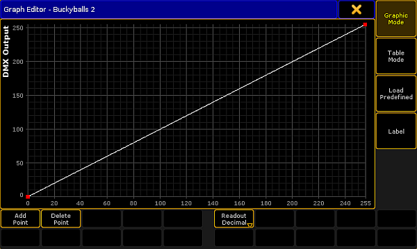

To add DMX profiles, tap Add or tap and hold the row New in the menu.
-A new row appears displaying DMX_Profile.
Label the newly created row:
-Tap and hold the row DMX_Profile.
-The pop-up Edit Name opens.
-Label the DMX profile.
-Press Please or Enter on the keyboard of your PC.
Edit a DMX profile:
-Select a row you would like to edit.
-Tap Edit.
-The graph editor opens.

Graph editor – graphic mode
Make settings in the DMX profile graph.
Hint:
The general settings Add Point, Delete Point, Graphic Mode, Table Mode, Load Predefined, and Label are set in the same manner as in the graph editor in the form pool. For more information on these settings see Settings in the Graph Editor in Create effect forms.
After the general settings were made, select the mode of display:
-To display the DMX profile graph in percentage, tap Readout Decimal to toggle it to Readout Percent.
-The graph is now displayed in percentage.
-To display the graph in decimal digits, tap it once again to toggle it back to Readout Decimal.
The settings are now applied.
Now, close the graph editor:
-Tap the in the upper right corner of the window.